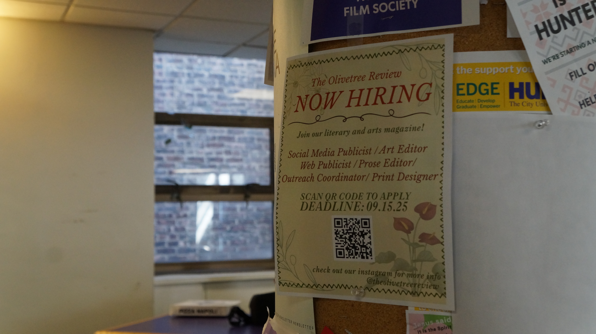
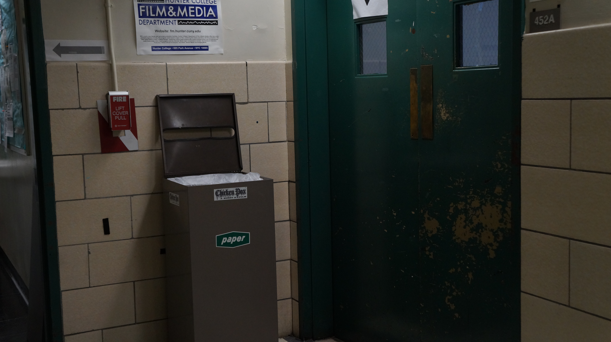

I chose this image, as I thought it had potential to look visually interesting among most of the photos I took. Additionally, I was drawn to the movement of the flyer—though I do not think I captured this very well in the photo. Though this was one flyer out of many, I wanted to focus on this one specifically and its contents. To do this, I tried to use the rule of thirds, as the background was relatively empty. Since the aperture was large, it was easier to keep the focus on the flyer in contrast to everything else. To draw more attention to the flyer, I cropped it so that it would be enlarged; this also 'cut out' anything else in the background that could be distracting (i.e.: the purple table, most of the ceiling). To make things easier to read, I increased the brightness. Because I wanted contrast without making things look too harsh, I slightly increased the blue/indigo tones that primarily show up in the shadows; I also increased the warmth and yellow tones that appear in the image, to make it feel more inviting. Overall, I do wish I had left slightly less space in the background, but cropping it any more would have started to cut off parts of the flyer. Moving forward, I want to be more intentional of what I am taking a photo of, and to play around with the coloring more.
